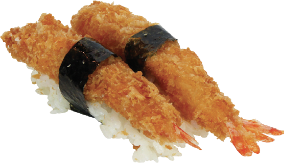
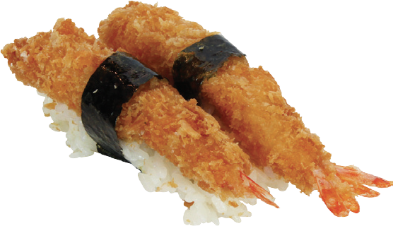

Menu Japonês
No Brasil, a comida japonesa ganhou muita popularidade ao longo das décadas e é apreciada por muitos. Aqui
estão algumas das iguarias japonesas mais degustadas no Brasil:
- Sushi: O sushi é um dos pratos japoneses mais reconhecidos em todo o mundo. É feito de arroz temperado com
vinagre de arroz e geralmente é combinado com peixe cru, frutos do mar, legumes ou outros ingredientes. Os
tipos mais comuns de sushi incluem nigiri (bolinhos de arroz com peixe por cima) e makizushi (rolos de sushi
enrolados em algas nori).
- Sashimi: O sashimi consiste em fatias finas de peixe cru ou frutos do mar, geralmente servidas com molho de
soja, wasabi (raiz-forte) e gengibre em conserva. Os tipos mais populares incluem sashimi de salmão, atum e
peixe branco.
- Tempura: O tempura é uma técnica de fritura japonesa em que ingredientes como camarões, vegetais ou
cogumelos são revestidos com uma massa leve e crocante e depois fritos até ficarem dourados.
- Teriyaki: O teriyaki é um prato que consiste em carne (geralmente frango ou carne bovina) grelhada ou cozida
em um molho doce à base de shoyu (molho de soja), saquê, mirin (um tipo de vinho de arroz doce) e açúcar. É
servido com arroz.
- Gyoza: Os gyoza são dumplings japoneses, que são pequenos bolinhos recheados com carne moída (geralmente de
porco e/ou frango), vegetais e temperos. Eles são cozidos no vapor e depois fritos para ficarem crocantes na
parte inferior.
- Ramen: O ramen é uma sopa de macarrão japonesa que geralmente inclui macarrão de trigo, caldo (à base de
osso de porco, frango ou vegetais), carne (como barriga de porco cozida lentamente), ovos cozidos, brotos de
bambu e outros condimentos.
- Sukiyaki: O sukiyaki é um prato cozido em uma panela na mesa com fatias finas de carne, tofu, verduras e
macarrão, todos cozidos em um molho doce à base de shoyu.
- Okonomiyaki: Okonomiyaki é uma espécie de panqueca ou pizza japonesa, que pode ser feita com uma variedade
de ingredientes, como repolho, frutos do mar, carne e vegetais, todos misturados em uma massa e fritos.
- Onigiri: Onigiri são bolinhos de arroz em forma de triângulo ou bola, geralmente envoltos em uma folha de
alga nori. Eles são frequentemente recheados com salmão, umeboshi (ameixa em conserva) ou outros
ingredientes.
 
